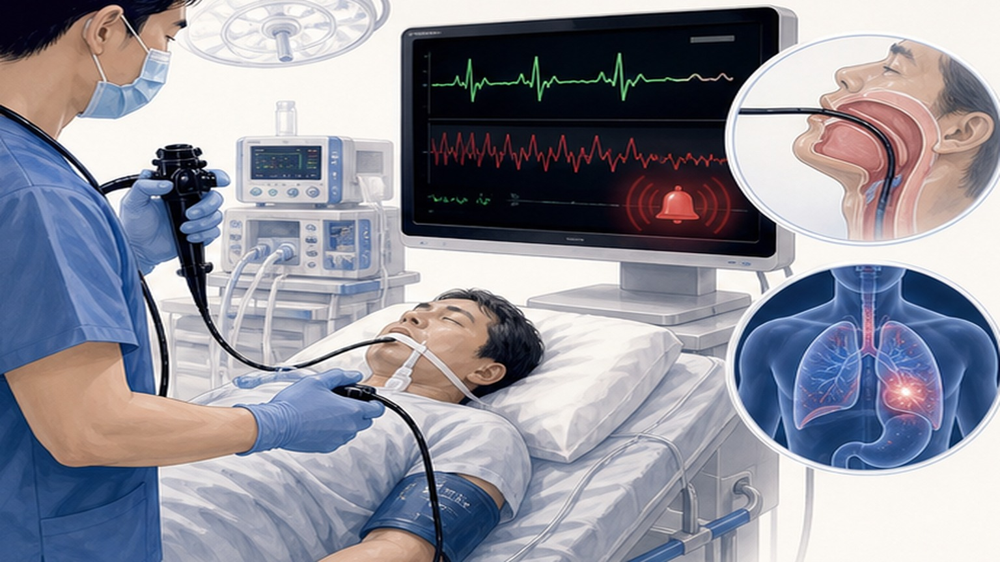
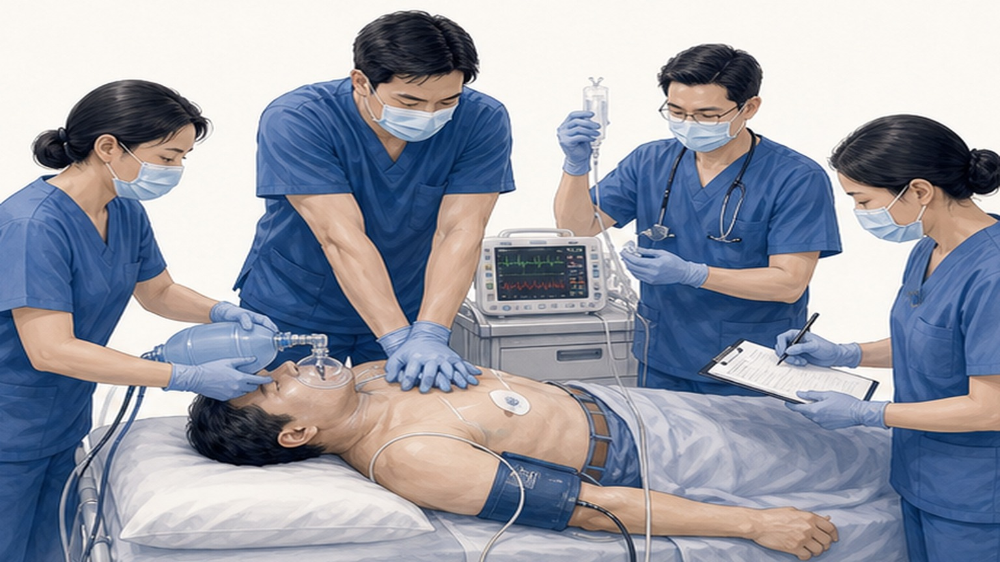
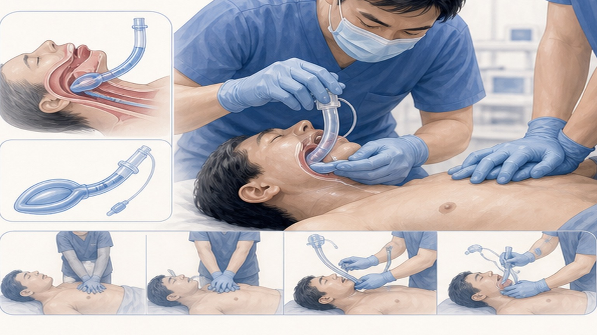

STAFF TRAINING · EMERGENCY RESPONSE
내시경실 심정지
응급 대응 프로토콜
진정 내시경 중 Code Blue · i-gel supraglottic airway 표준 대응
02
CHAPTER 01 · WHY IT MATTERS
10초 안에 인지, 2분 안에 결정
진정 내시경 합병증의 70% 이상은 호흡·순환계 — 초기 대응이 예후를 좌우합니다
≤10초
반응·호흡·맥박 동시 확인 후 즉시 "Code Blue" 호출까지의 표준 인지 시간입니다.
Why this room matters
진정 내시경실은 propofol·midazolam·fentanyl이 동시에 작용하고,
기도 접근이 내시경에 가려진 환경입니다. 그래서 일반 외래보다 즉시 시행 프로토콜과
역할 분담이 더 엄격하게 정해져 있어야 합니다.
03
CHAPTER 01 · WHY IT MATTERS
Code Blue란
병원 내 심정지·호흡정지 발생 시 전 직원이 즉시 협업하는 표준 알람
의식·호흡·맥박이 동시에 사라지면 지체 없이 Code Blue.
누구든 가장 먼저 발견한 사람이 호출의 책임자입니다. 외치는 즉시 가까운 직원이 119, 다른 직원이 응급카트, 또 다른 직원이 압박을 시작합니다. "누가 할까요"를 묻는 동안 분초가 지나갑니다.
Compression target
100–120 / min
깊이 5–6 cm · full recoil · 2분 교대 · hands-off <10초
Defibrillation
200 J biphasic
VF/pVT 단일 충격 후 리듬 재확인 없이 압박 즉시 재개
04
CHAPTER 02 · CAUSES
진정 내시경 심정지의 흔한 원인
대부분 호흡·진정제 관련 — 길항제·환기 우선 대응이 가능한 원인이 많습니다
CAUSE · 01
진정제 호흡억제
propofol · midazolam · fentanyl · pethidine — 가장 흔한 원인. naloxone · flumazenil 즉시 검토.
CAUSE · 02
흡인 (Aspiration)
위 내용물·혈액이 기도로 → 저산소증. 즉시 suction · advanced airway 확보.
CAUSE · 03
미주신경반사
Vasovagal — 내시경 자극으로 서맥·asystole. atropine 0.5 mg IV 고려.
CAUSE · 04
기저 심질환 · ACS
불안정 협심증·MI 진행 중 검사. ECG · post-ROSC PCI 의뢰 경로.
CAUSE · 05
출혈 · 저혈량
시술 중·후 출혈 → hypovolemia. 수액·수혈 · pressure bag.
CAUSE · 06
긴장성 기흉
EUS·ERCP 후 드물게. 한쪽 호흡음 소실·기관 편위 시 즉시 의심.

05
CHAPTER 03 · RESPONSE FLOW
즉시 시행 4단계 흐름
인지 → 압박·제세동 → 기도 → 약물·가역 원인 — 직선적이지만 동시에 진행
1
인지 · 호출 · 자세
≤10초 평가 · "Code Blue" · 119 · 내시경·mouthguard 제거 · 좌측위→supine · CPR board.
2
압박 + 제세동
100–120/min · 5–6 cm · AED 부착 · VF/pVT면 200 J biphasic · 압박 즉시 재개.
3
기도 — i-gel 삽입
Size 4 표준 · 압박 중단 없이 ≤10초 · BVM·FiO₂ 100% · ETCO₂ · OG tube로 위 감압.
4
약물 + 가역 원인
Epi 1 mg q3–5분 · VF 지속 시 amiodarone · 진정제 길항제 · 5H 5T 동시 점검.
06
CHAPTER 04 · ROLE ASSIGNMENT
Code Blue 시 6가지 역할
최소 4명, 가능하면 5–6명 — 시뮬레이션에서 동선을 미리 결정
ROLE · 01
팀 리더 (원장)
전체 지휘 · 리듬 판독·약물 결정 · ROSC 이후 이송 결정. ACLS 인증 필수.
ROLE · 02
압박자
100–120/min · 5–6 cm · 2분 교대. ETCO₂ <10 mmHg면 자세 점검.
ROLE · 03
기도 · 환기
i-gel 삽입 · BVM 환기 10회/min · FiO₂ 100% · gastric channel로 위 감압.
ROLE · 04
약물 · IV 라인
IV/IO 확보 · Epi 준비 · 길항제 (naloxone · flumazenil) 즉시 가용 상태.
ROLE · 05
기록자
Code Blue 기록지 — 시간·리듬·약물·shock·교대를 분 단위로 기록.
ROLE · 06
연락 · 동선 확보
119 · 한림대동탄성심병원 · 보호자 연락 · 이송 동선·엘리베이터 미리 확보.

07
CHAPTER 05 · AIRWAY · I-GEL
i-gel 삽입 — 압박 중단 없이 ≤10초
성인 표준 Size 4 (50–90 kg) · sniffing position · hard palate를 따라 단번에
STEP · 01
준비 — 윤활 · 자세
Cuff에 수용성 윤활제 도포 · sniffing position 확보 · suction 옆에 즉시 가용.
STEP · 02
삽입 — 단번에
Hard palate를 따라 후방·하방으로 일관된 힘 · 검은 표시선이 치열에 닿을 때 정지.
STEP · 03
확인 — ETCO₂ · 흉벽 거상
파형 capnography 즉시 확인 · 좌·우 흉벽 거상 균등 · 청진 가능하면 양측 호흡음.
STEP · 04
유지 — 비동기 환기 + OG
압박 100–120/min 지속 + 환기 10회/min (1회/6초) · OG tube 12 Fr로 위 감압.
실패 시
ETCO₂ 파형이 안 잡히거나 환기 저항이 높으면 즉시 i-gel 제거 · BVM으로 환기 유지하며 재삽입 또는 ETT backup.

08
CHAPTER 06 · RHYTHM
리듬 분기 — Shockable vs Non-shockable
AED 분석 결과에 따라 다음 행동이 결정됩니다
!
VF / pVT — 즉시 제세동
- Biphasic 200 J 단일 충격
- Shock 후 리듬 재확인 X
- 즉시 압박 재개 — 2분 후 재평가
- Epi 1 mg IV q3–5분 (3회째 cycle부터)
- Amiodarone 300 mg → 150 mg
- 또는 Lidocaine 1–1.5 mg/kg
- Refractory 시 magnesium · 이중 제세동
→
PEA / Asystole — 압박 + 원인
- 제세동 금지 · AED는 분석만 반복
- Epi 1 mg IV q3–5분 즉시 시작
- 5H 5T 가역 원인 동시 점검
- Hypoxia → 환기 강화 · FiO₂ 100%
- Toxin → naloxone · flumazenil
- Hypovolemia → 수액·수혈
- 2분마다 리듬 재확인 · ROSC 시 ROSC bundle
09
CHAPTER 07 · DRUGS
필수 약물 — 용량 · 빈도
Epi는 모든 리듬 공통, 길항제는 진정제 종류에 맞춰 즉시
CORE · ALL RHYTHMS
Epinephrine
- Epinephrine1 mg IV · q3–5min
- 경로IV 또는 IO · ETT 비권장
- VF/pVT 시점2번째 shock 후
- PEA/Asy 시점즉시 (인지하자마자)
All cardiac arrest
SHOCKABLE · BACKUP
Amiodarone
- 1차300 mg IV bolus
- 2차150 mg IV (10분 후)
- 대체Lidocaine 1–1.5 mg/kg
- TorsadesMgSO₄ 2 g IV
Refractory VF / pVT
SEDATION REVERSAL
길항제 (Antidote)
- Naloxone0.4–2 mg IV (opioid)
- Flumazenil0.2 mg IV (BZD)
- Propofol길항제 없음 — 지지요법
- Atropine0.5 mg (vasovagal 서맥)
Endoscopy-specific
10
CHAPTER 08 · PITFALLS
자주 놓치는 6가지 — 시뮬레이션 단골
실제 Code 시 반복되는 실수 — 미리 인지하면 시간을 아낍니다
PITFALL · 01
압박 깊이 부족
5 cm 미만이 흔함. ETCO₂ <10 mmHg면 즉시 자세·깊이 점검.
PITFALL · 02
교대 안 함
2분 넘으면 압박 질이 급락. 알람·기록자 호명으로 강제 교대.
PITFALL · 03
Hands-off 길어짐
리듬 확인·삽관·정맥로 잡는 동안 압박 중단. 모두 압박 옆에서 동시 진행.
PITFALL · 04
자세 전환 지연
좌측위 → supine 미루다 시간 소실. CPR board를 침대 옆에 항상 비치.
PITFALL · 05
길항제 늦음
Opioid·BZD 사용 환자에서 naloxone·flumazenil 검토를 잊음. 약물 담당이 선제 준비.
RED FLAG · 06
기록 누락 → 이송 지연
시간·리듬·약물 기록이 부실하면 상급병원 인계가 늦어짐. 기록자 1명 전담 고정.
11
CHAPTER 09 · STAFF ACTION
오늘 부서로 돌아가서 확인할 7가지
교육이 끝나면 각자 자기 동선·자기 약물·자기 기록지를 다시 점검
01
진료 시작 전 응급카트 일일 점검 7항목 완료 (체크리스트 별지)
02
i-gel Size 3·4·5 위치를 눈 감고도 찾을 수 있는지
03
AED 패드 부착 위치·전원 켜는 순서를 3초 내 시연 가능한지
04
Naloxone · Flumazenil 위치·용량을 구두로 답할 수 있는지
05
Code Blue 시 본인 역할 (압박·환기·약물·기록·연락) 1순위·2순위
06
119 · 한림대동탄성심병원 직통번호 외워서 또는 즉시 시인
07
BLS 인증 유효기간 확인 — 만료 6개월 전 재교육 신청
→
분기 1회 in-situ 시뮬레이션 — 진짜 환자 만나기 전에 반복
END OF DECK · READY TO RESPOND
10초 안에 인지,
2분 안에 결정
분기마다 다시 보세요 — 위기 순간의 5초가 환자의 한 평생을 결정합니다.
Phone
031-893-4560
Address
경기 용인 수지구
광교중앙로 298, 4층
광교중앙로 298, 4층
Specialty
소화기내과 · 일반내과
5대암 검진
5대암 검진
SCAN TO REVIEW
교육 자료 다시 보기
QR을 스캔하면 핸드폰에서
본 교육 자료를 다시 볼 수 있습니다
본 교육 자료를 다시 볼 수 있습니다